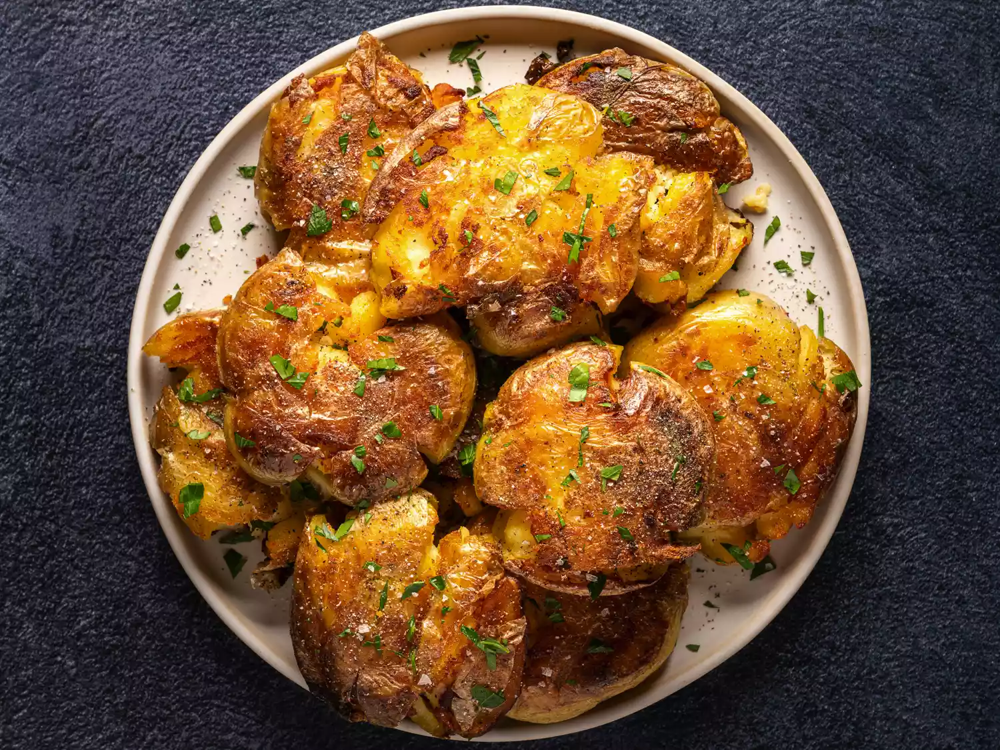
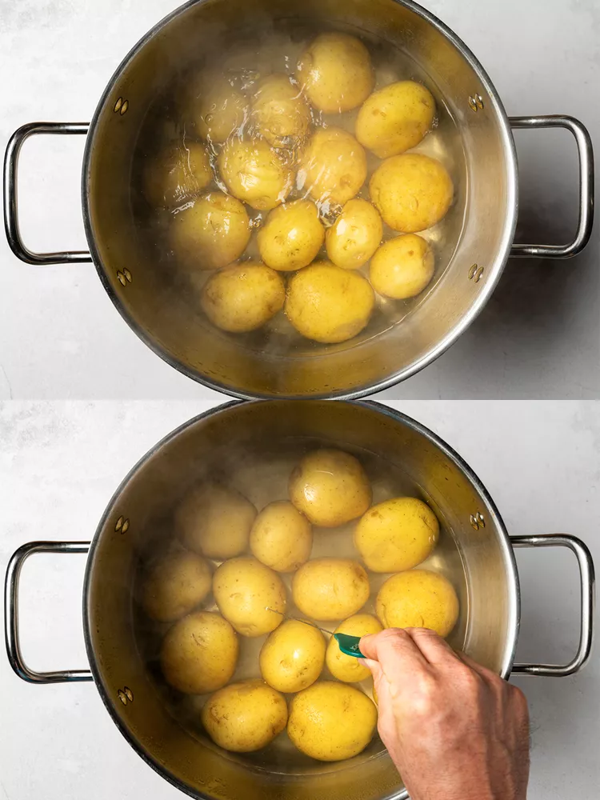
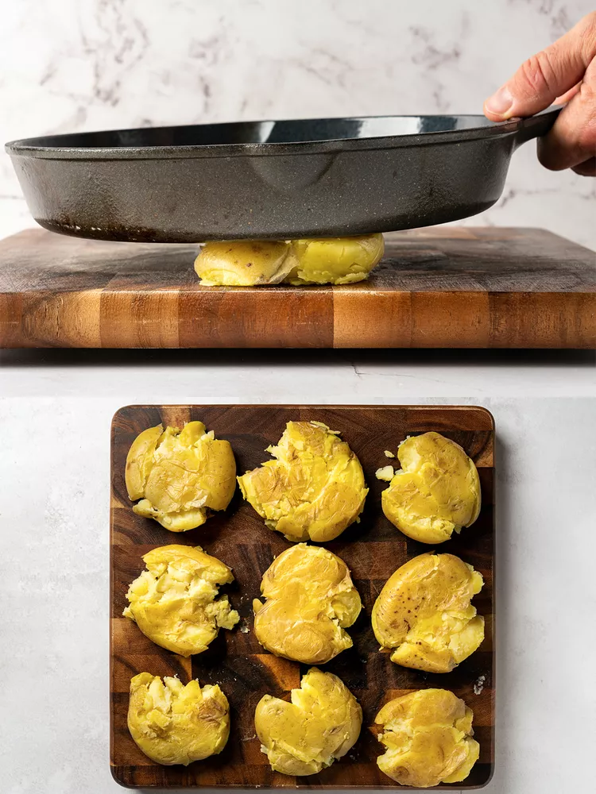
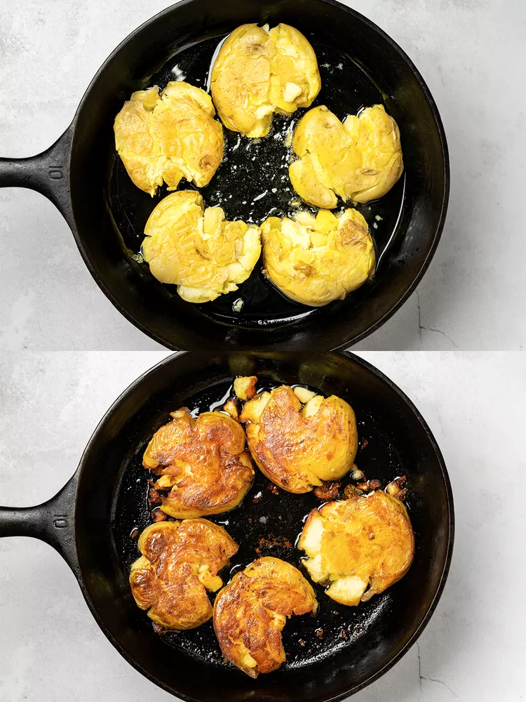
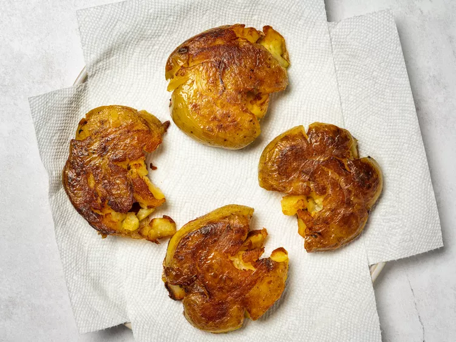
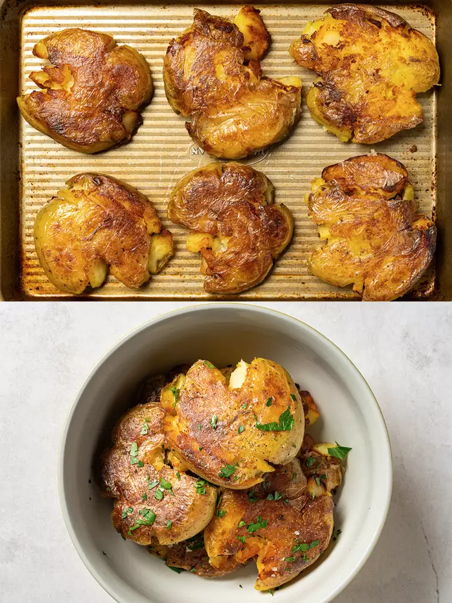

Crispy
Smashed Potatoes
from J. Kenji López-Alt of Serious Eats

About this recipe...
If you've never tried smashed potatoes, then this irresistible recipe promises a symphony of textures and flavor for you to discover. Crispy on the outside yet wonderfully creamy on the inside, these smashed potatoes are a delightful departure from traditional spud preparations. Boiled until tender, the potatoes are then gently smashed and roasted to golden perfection, resulting in a medley of crispy edges and fluffy interiors. Enhanced with aromatic herbs, each bite offers a harmonious blend of savory goodness. Whether served as a delectable side dish or enjoyed as a satisfying snack, these smashed potatoes are sure to captivate your palate and earn a coveted spot in your culinary repertoire.
Ingredients
- 4 lbs small red or Yukon gold potatoes
- Kosher salt
- 1/2 cup vegetable oil or duck fat, plus more as needed
- Freshly ground black pepper
- 1/4 cup sliced chives, parsley, or tarragon (optional)
Directions
-
Place potatoes in a large pot and cover with cold water. Season heavily with salt. Bring to a boil over high heat and cook until potatoes are completely tender, about 10 minutes after a boil is achieved (poke a potato with a sharp knife or cake tester to test for doneness). Drain in a colander set in the sink and let rest for 10 minutes to dry and cool slightly.

-
Working one potato at a time, place potato on cutting board and smash firmly with the bottom of a heavy skillet to a thickness of about 1/2-inch thick. Transfer to a large plate or tray as you work.

-
Heat 1/2 cup oil (or duck fat) in a large non-stick or cast iron skillet over medium heat until shimmering. Add as many potatoes as will fit in a single layer. Cook, shaking pan occasionally, until bottom side is deep golden brown, about 6 minutes. Carefully flip with a thin metal spatula and cook until second side is golden brown and crisp, about 5 minutes longer. Transfer to a paper towel-lined plate and allow to drain.

-
Continue cooking potatoes in batches, adding more oil or fat as necessary, until all potatoes are cooked. Potatoes can then be left aside until ready to serve.

-
To serve, adjust oven racks to upper- and lower-middle positions and preheat oven to 400°F (200°C). Spread potatoes over to large rimmed baking sheets. Transfer to oven and cook until heated through, about 6 minutes. Transfer to a large bowl, season to taste with salt and pepper, add herbs (if using), toss to distribute, transfer to a serving platter, and serve.
